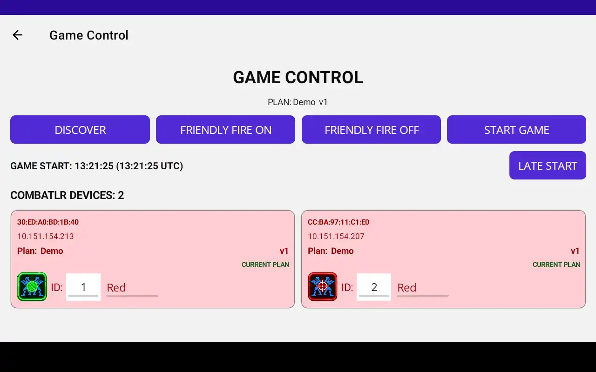
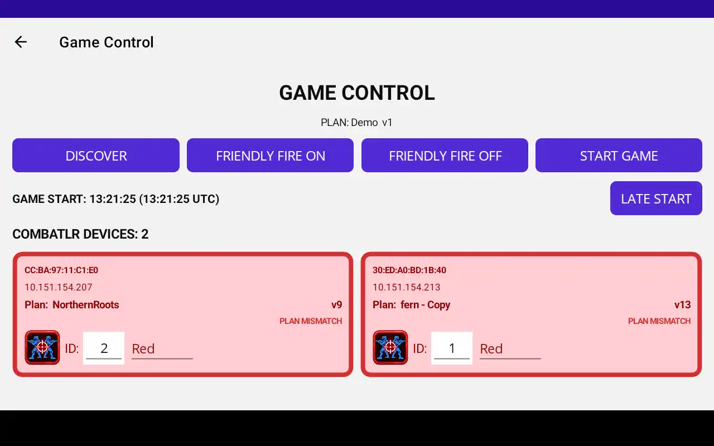

GETTING STARTED / 04
Manage games.
The game control tools bring the players and the match together. Use CombatLR Mobile to check the selected plan, verify connected units, start the session and monitor the moving safe zone.
Have a completed game plan transferred to the player units. Make sure the players have GPS reception and are connected to the same Wi-Fi network.
1. Select the game plan
Open the game control screen in CombatLR Mobile and check the selected project and game plan. Confirm that the map and plan are the ones prepared for this session.
2. Check the player units
Allow the app to discover the powered-on units. Check that each expected player is online.

'PLAN: Name and Version' shows the currently selected game plan.
All player units should appear on the player grid. Each pane on the grid shows the player unit ID, Team (Red, Green, Blue, Yellow), Game plan name and version, and whether friendly fire is enabled.
The pane background colour shows the team allocated to that player.
Each unit game plan should match the currently selected plan in both name and version. 'Current Plan' should appear in each unit pane on the grid.
Change a player team by selecting the team name of the player you wish to change, and select a new team. The new team will be sent to the player unit immediately.
Change the player ID by selecting the player ID field and entering a new value. All player IDs should be unique, regardless of team. The new ID will be sent to the player unit immediately.
Friendly fire state is shown as a red icon with a red crosshair. A green icon indicates friendly fire is off for that player. Tap the icon to toggle it for that player.
Press or to change the setting for all players.
Note that changing friendly fire, team or player ID is a persistent change. Player units retain these settings after power down.
A game unit with a duplicate ID or a plan mismatch will be displayed with a red border. Resolve this before starting the game.

A game unit that goes offline will be displayed with a grey pane.
Resolve duplicate player IDs and plan name/version mismatches. An offline unit cannot be verified. A unit showing FTP MODE! is in file-transfer mode and is not ready for normal game control.
3. Start the match
When the players and units are ready, use from the game control screen. The mobile app sends the start command to the game units displayed on the grid. Game units that receive the game start command will be removed from the grid.
If units remain on the grid after pressing , use to retry.
can be used to bring a player into the game at any time. The software automatically brings the player onto the game field at the same game state as the other players. Use to ensure they are activated within a valid zone.
4. Monitor game progress
Open the Game Progress screen after the game has started. It presents the current map and active zone, including a zone transition when one is in progress. It also shows the time remaining in the current zone, the time until the next zone and the mobile device's current position.
The progress display is tied to the start time used for the match. Zone timing is driven by GPS time on the player units, so the game does not depend on a central server continually coordinating the players.
5. Keep the match safe
Make sure the chosen location is suitable for outdoor play and that participants understand the boundaries and rules before starting. Players should remain aware of their surroundings and never follow a game objective into a road, private property or another unsafe area.
GPS accuracy can vary with terrain, buildings and tree cover. Treat the displayed position as a guide rather than a substitute for good judgement on the ground.
CombatLR is a GPS-based outdoor game. The site needs adequate GPS coverage, and the game organiser remains responsible for choosing a safe play area and briefing participants.
Go play.
You've prepared the map, built the plan, loaded the units and started the match.
Back to CombatLR ↑